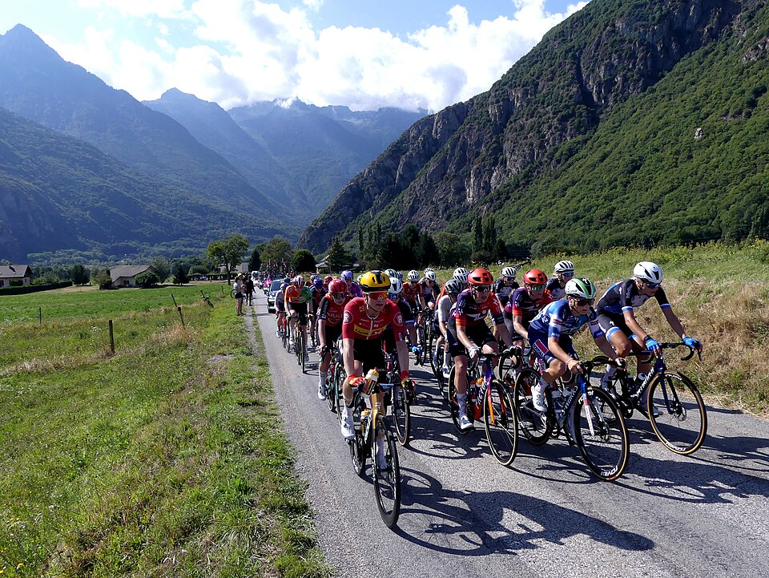

O Tour de France Femmes entra em sua semana mais importante entre os dias 3 e 9 de agosto. Para quem acompanha o ciclismo de perto, o período reúne alguns dos desafios mais aguardados da temporada. Para o público que ainda está conhecendo a modalidade, é uma oportunidade de entender por que essa competição ocupa um lugar tão especial no calendário esportivo.
A programação terá um pouco de tudo: disputa individual contra o relógio, etapas longas em terreno irregular, uma chegada ao lendário Mont Ventoux e o encerramento em Nice. O Brasil estará representado por Ana Vitória “Tota” Magalhães, ciclista da equipe Movistar que disputa seu segundo Tour de France Femmes.
Mais do que uma sequência de corridas independentes, o Tour funciona como uma grande jornada. As atletas competem todos os dias, acumulam seus tempos e precisam equilibrar velocidade, resistência, estratégia e recuperação. Uma campeã não é definida apenas por vencer uma etapa, mas por completar toda a prova no menor tempo total.
O que é o Tour de France Femmes?
É a principal volta por etapas do ciclismo feminino. A competição moderna foi lançada em 2022 e é organizada pelo mesmo grupo responsável pelo tradicional Tour de France masculino.
Apesar de sua fase atual ser recente, a história das mulheres no Tour é bem mais antiga. Diferentes versões e formatos de uma volta feminina francesa foram disputados ao longo das décadas, especialmente nos anos 1980. A criação do Tour de France Femmes avec Zwift devolveu ao calendário uma competição feminina com estrutura, visibilidade internacional e percursos compatíveis com sua importância esportiva.
O funcionamento é relativamente simples. A cada dia, as ciclistas disputam uma etapa com largada e chegada previamente definidas. Os tempos são somados, e quem apresentar o menor resultado acumulado lidera a classificação geral.
A campeã é uma única ciclista: aquela que terminar todas as etapas com o menor tempo acumulado. Apesar disso, o ciclismo é um esporte coletivo, e cada equipe trabalha para proteger sua líder e ajudá-la na disputa.
A líder usa a camisa amarela, uma das peças mais conhecidas do ciclismo mundial. Isso não significa necessariamente que ela venceu todas as etapas. Uma atleta pode conquistar a camisa pela regularidade, evitando grandes perdas e se mantendo próxima das primeiras colocadas durante toda a competição.
Também existem classificações paralelas, como a disputa por pontos, a competição de montanha, a melhor jovem e a classificação por equipes. Assim, mesmo uma ciclista sem chance de título geral pode ter objetivos importantes durante o Tour.
As diferentes etapas da corrida
O Tour não é disputado sempre no mesmo tipo de estrada. Essa variedade é justamente o que torna a competição mais interessante e exige atletas com características distintas.
Há etapas planas, nas quais as equipes costumam preparar uma chegada rápida para suas velocistas. Existem jornadas acidentadas, com várias subidas curtas, ideais para ataques e fugas. Também há dias de alta montanha, normalmente decisivos para a classificação geral.
Outro formato importante é o contrarrelógio, presente nesta edição na terça-feira, 4 de agosto. Nesse tipo de etapa, cada ciclista larga sozinha, em intervalos definidos, e tenta completar o percurso no menor tempo possível.
Em vez de competir lado a lado com todo o grupo, a atleta luta diretamente contra o cronômetro. Por isso, utiliza bicicleta, capacete e posição corporal preparados para reduzir a resistência do vento.
O contrarrelógio costuma beneficiar ciclistas muito potentes e capazes de manter alta velocidade por vários quilômetros. Quem não tem essa especialidade tenta limitar o prejuízo para continuar na disputa antes das etapas de montanha.
Dijon pode mudar a classificação
A etapa de terça-feira será disputada entre Gevrey-Chambertin e Dijon, com 21 quilômetros. A distância pode parecer pequena quando comparada a jornadas de mais de 150 quilômetros, mas o esforço é intenso do início ao fim.
Não há espaço para descansar dentro do pelotão, nome dado ao grande grupo de ciclistas que pedala junto durante uma etapa convencional. No contrarrelógio, cada competidora precisa encontrar sozinha o melhor ritmo.
A suíça Marlen Reusser, companheira de Tota Magalhães na Movistar, é uma das ciclistas conhecidas pela qualidade nesse tipo de prova. Para a equipe espanhola, o dia representa uma oportunidade de ganhar tempo na classificação geral.
As escaladoras, atletas que se destacam nas grandes subidas, terão outro objetivo: perder o menor número possível de segundos. Caso a diferença fique grande, precisarão atacar mais tarde nas montanhas.
O espaço para fugas
Na quarta e na quinta-feira, o Tour passará por terrenos considerados acidentados. Isso significa que o caminho terá subidas e descidas frequentes, mas sem necessariamente terminar em uma montanha muito longa.
Essas etapas são difíceis de controlar porque oferecem diferentes possibilidades de corrida. Uma delas é a fuga, quando uma ou mais ciclistas se distanciam do pelotão e tentam chegar à meta antes de serem alcançadas.
Nem toda fuga consegue vencer. Muitas são neutralizadas perto da chegada, depois de horas na frente. Ainda assim, atacar pode dar visibilidade à ciclista, garantir pontos em classificações secundárias e obrigar as equipes favoritas a gastar energia na perseguição.
Para o público iniciante, acompanhar a distância entre a fuga e o pelotão é uma das formas mais simples de entender a estratégia. Quando a vantagem começa a cair rapidamente, significa que o grupo principal aumentou o ritmo para buscar as escapadas.
As equipes também precisam proteger suas principais atletas contra quedas, vento e problemas de posicionamento. Ficar muito atrás no pelotão pode ser perigoso, principalmente em estradas estreitas ou em momentos de aceleração.
O grande desafio da sexta-feira
A etapa mais aguardada acontecerá na sexta-feira, 7 de agosto, com chegada ao Mont Ventoux. A montanha é uma das mais famosas de todo o ciclismo e aparece há décadas em momentos decisivos do Tour de France.
O Ventoux é facilmente reconhecido por sua parte final aberta, pedregosa e quase sem vegetação. O cenário dá à montanha uma aparência diferente de outras subidas dos Alpes e dos Pireneus.
A dificuldade não está apenas na paisagem ou na altitude. A subida é longa, apresenta trechos inclinados e pode ser castigada pelo vento. Depois de vários dias de competição, o cansaço acumulado também pesa.
Nas montanhas, as diferenças de tempo podem crescer muito mais rapidamente. Uma ciclista que perde contato com o grupo das favoritas pode ceder segundos ou minutos em poucos quilômetros.
É nesse momento que aparecem as chamadas gregárias. Elas são ciclistas que trabalham para uma líder, levando água, controlando o ritmo, protegendo contra o vento e ajudando em perseguições. Quando a estrada fica muito inclinada, as melhores gregárias tentam acompanhar a líder pelo maior tempo possível.
O trabalho de Tota Magalhães dentro da Movistar passa por esse tipo de função coletiva. Seu desempenho não pode ser avaliado apenas pela posição individual na classificação. Em uma grande volta, ajudar a principal nome da equipe também pode ser decisivo para o resultado final.
Final em Nice ainda pode mudar
O Tour de France Femmes terminará no domingo, 9 de agosto, em Nice. Mas não será uma etapa apenas de celebração.
Em algumas grandes voltas, o último dia apresenta um percurso mais controlado, com a classificação geral praticamente definida. Nesta edição, o cenário será diferente. O trajeto ao redor de Nice terá subidas e espaço para novos ataques.
Isso significa que a dona da camisa amarela ainda precisará defender sua vantagem. Uma diferença pequena pode desaparecer diante de uma aceleração, de uma falha de posicionamento ou de um momento de fraqueza.
As descidas também terão importância. Descer bem no ciclismo não significa simplesmente pedalar mais rápido. É necessário escolher a trajetória correta nas curvas, controlar a bicicleta, entender as condições do asfalto e evitar riscos desnecessários.
A campeã só poderá respirar aliviada depois de cruzar a última linha de chegada.
Tota Magalhães disputa seu segundo Tour
A brasileira participa do Tour de France Femmes pelo segundo ano consecutivo. A carioca representa a Movistar, uma das equipes tradicionais do circuito internacional.
Sua presença tem peso histórico para o ciclismo brasileiro. Em 2025, Tota tornou-se a primeira brasileira a disputar a versão moderna do Tour feminino. Ela também apareceu em fugas e mostrou disposição para pedalar de forma ofensiva.
Retornar no ano seguinte confirma sua adaptação ao mais alto nível da modalidade. Uma grande volta exige muito mais do que bom desempenho em um único dia. É necessário suportar etapas consecutivas, mudanças de terreno, transferências, pressão competitiva e pouco tempo de recuperação.
Tota também ajuda a aproximar o público brasileiro de uma prova ainda pouco conhecida fora do grupo que acompanha o ciclismo regularmente. Mesmo trabalhando para sua equipe, cada aparição em uma fuga ou em um momento decisivo aumenta a visibilidade do país na competição.
Programação da semana decisiva:
- Segunda-feira, 3 de agosto
Etapa 3 — Genebra a Poligny
Distância: 156,5 quilômetros
Tipo: etapa acidentada - Terça-feira, 4 de agosto
Etapa 4 — Gevrey-Chambertin a Dijon
Distância: 21 quilômetros
Tipo: contrarrelógio individual - Quarta-feira, 5 de agosto
Etapa 5 — Mâcon a Belleville-en-Beaujolais
Distância: 140 quilômetros
Tipo: etapa acidentada - Quinta-feira, 6 de agosto
Etapa 6 — Montbrison a Tournon-sur-Rhône
Distância: 153,4 quilômetros
Tipo: etapa acidentada - Sexta-feira, 7 de agosto
Etapa 7 — La Voulte-sur-Rhône ao Mont Ventoux
Distância: 146,8 quilômetros
Tipo: etapa de montanha com chegada no alto - Sábado, 8 de agosto
Etapa 8 — Sisteron a Nice
Distância: 171,9 quilômetros
Tipo: etapa longa, com possibilidade de chegada rápida ou fuga - Domingo, 9 de agosto
Etapa 9 — Nice a Nice
Distância: 99,2 quilômetros
Tipo: etapa montanhosa e encerramento da competição
Onde assistir
No Brasil, o Tour de France Femmes 2026 tem transmissão ao vivo pelo canal ESPN 3, na televisão por assinatura, e pelo Disney+, no streaming. A cobertura acompanha as etapas da competição até o encerramento em Nice, no domingo, 9 de agosto. Os horários podem variar conforme o percurso de cada dia, e a chegada das ciclistas está prevista, em geral, para perto das 12h30, no horário de Brasília.
Velocidade, resistência e trabalho coletivo
O Tour de France Femmes pode parecer complexo em um primeiro contato porque reúne várias classificações, estratégias e tipos de etapa. No entanto, sua lógica principal é direta: completar todos os percursos no menor tempo acumulado.
Ao redor dessa disputa central, cada dia conta uma história diferente. As velocistas buscam as chegadas planas, as especialistas tentam abrir vantagem no contrarrelógio, as escaladoras atacam nas montanhas e as gregárias trabalham para manter suas líderes na briga.
Entre 3 e 9 de agosto, o público verá essas diferentes peças se encontrarem. O contrarrelógio organizará a disputa, o Mont Ventoux deverá separar as principais candidatas e o circuito de Nice dará a última oportunidade para mudar a classificação.
Para o Brasil, a presença de Tota Magalhães acrescenta um motivo especial para acompanhar a prova. Para quem está começando a entender o ciclismo, a semana oferece um resumo quase completo da modalidade: esforço individual, estratégia coletiva, ataques, perseguições, montanhas e uma camisa amarela em jogo até os quilômetros finais.